Import of bank statements by Monobank
The module allows you to receive a bank statement from Monobank in a standard format for further work and distribution of these statements.
This module allows you to get a MonoBank bank statement in the standard Odoo statement format. You will be able to use it for further work and the distribution of these statements. The module provides detailed bank statements with all available fields.
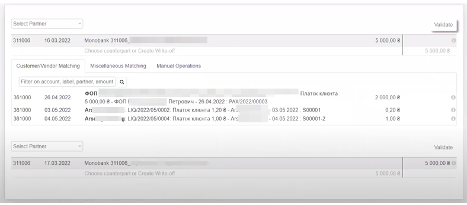
About Kikworks
We are Ukrainian software developing company working with odoo versions 10 to 18.
We specialize on solutions for Ukrainian market, however often do much more.
Please see all of our Ukrainian modules here.
Please see all of our modules here.
Would be glad to talk about odoo customization and development for your company or your clients.
Feel free to contact us by:
Email: info@kitworks.systems
Skype: myshyak_kiev
WhatsApp: https://wa.me/380503342348
Telegram: https://t.me/myshyak
Support
We do provide free bugfixes and updates for all our modules during 1 year after purchase.
The warranty is provided on clean odoo instance.
We would not help you (for free) in case our modules do not work on your server or conflict with any other modules.
Also, we are ready to consider your feature requests to our modules, and if we would find them useful we can consider including them to new releases.
Also, we do provide all types of odoo support services, like installing Odoo instance on your server, supporting your Odoo server, custom development.
Prepaid support and development packages are available upon request.
Module settings
To configure this module, select the Applications category, click Refresh Application Lists button (located on the left in the top line). Enter "Monobank" in the search bar. Install the modules. The next step is to go to the Accounts/Settings/Journals section.
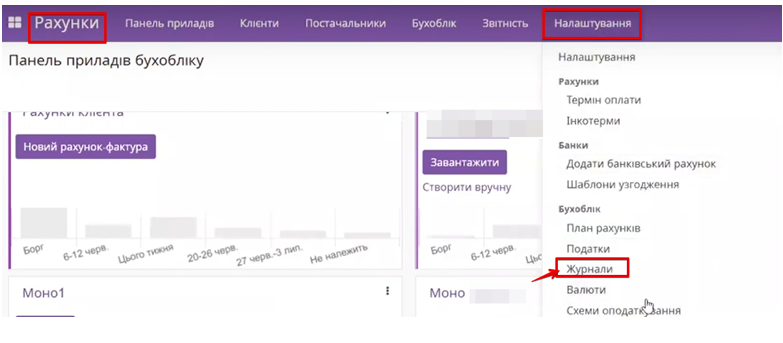
Click on New, create a new journal. Enter the necessary data. Adjust the debit and credit accounts. Enter the Token and ID.
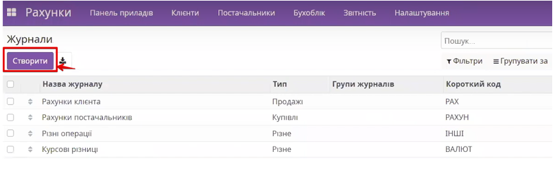
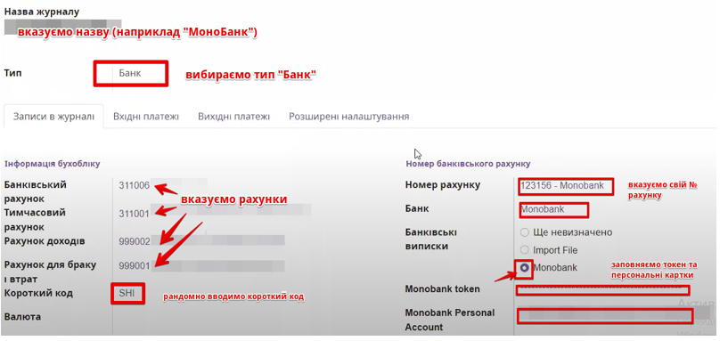
To get a Monobank token, go to Monobank.ua , select the API tab. After authorization and scanning the QR code, you will automatically receive My token.
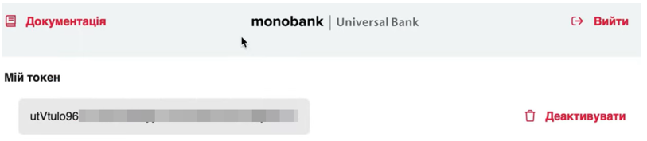
In order to download/update your bank statement, you can use both the manual method (via the Manual Sync button located in the newly created journal) and the automatic method (via Technical/Automation/Scheduled actions). The date from which you need to download the statement is indicated in the Initiation date field.
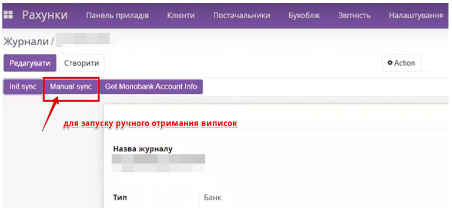
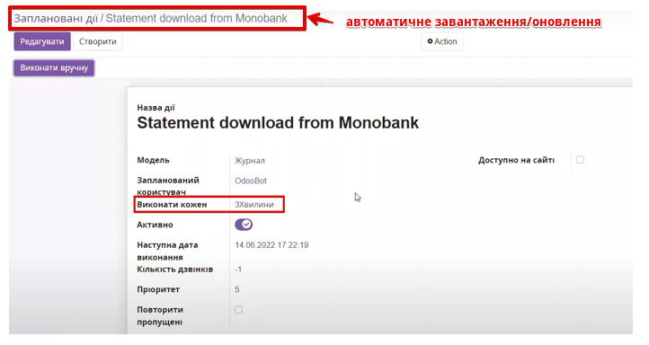
To work with exchange rates, you need to have Multicurrency function enabled. You also need to have different currencies enabled in Odoo database. To do this, go to General Settings. In the Billing section, select Multicurrency.
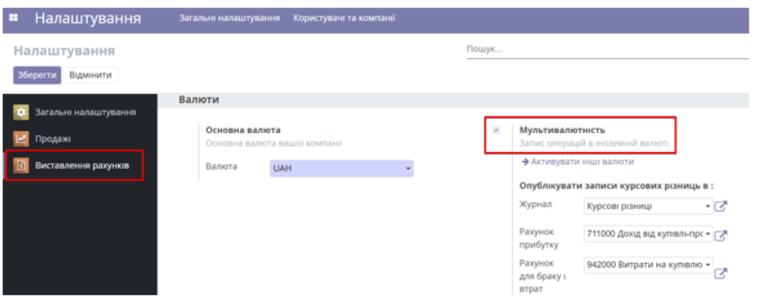
Go to Billing/Settings/Currencies and activate the currency.
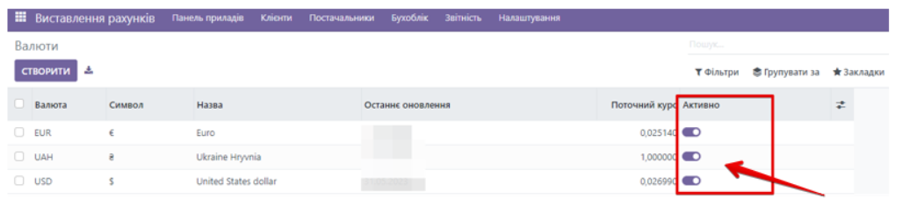
Next, go to the Billing section and select the Update Rates service on the Settings tab.
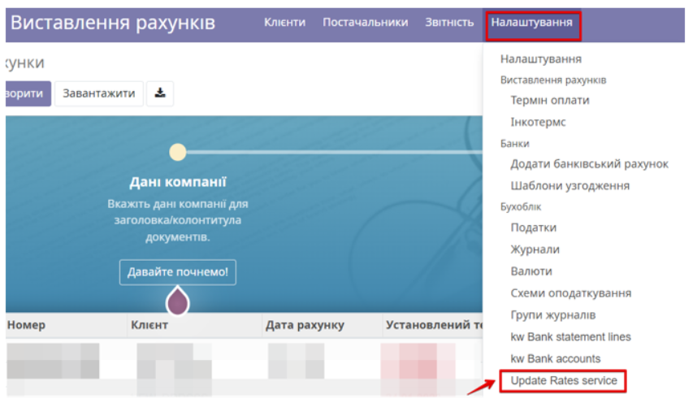
Click the Create button.
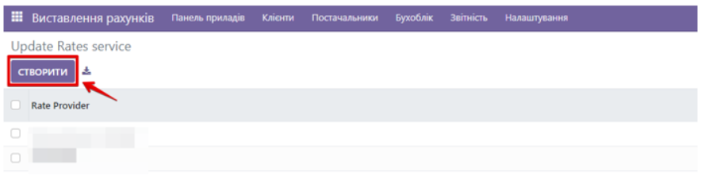
When creating a new service, select MonoBank in the Rate Provider field and specify the company. Click Save.
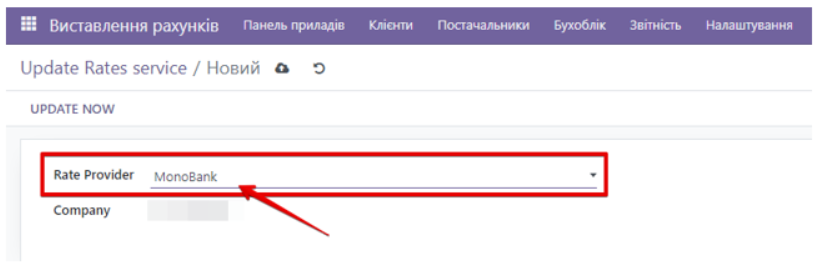
After opening the newly created MonoBank currency update service, click the “Update now” button in the upper left corner of the window. After you click it, Odoo system will connect to the MonoBank server and download the current exchange rates.
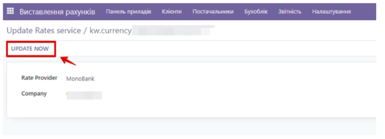
You can see them by going to the Billing/Settings section and selecting the Currencies item. In the middle of each currency, or by clicking the "Rates" button, you can see the history of exchange rates.
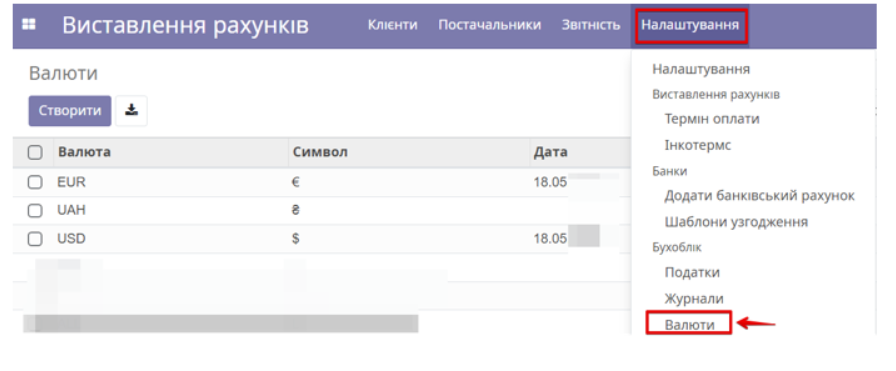
To set up automatic currency updates, switch to developer mode. In the General settings, go to the Technical settings tab and select Scheduled actions. In the search field, specify the currency rate and activate this action (you can change the frequency/time of the action if you wish).
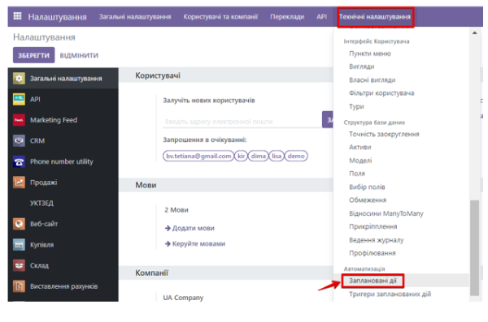
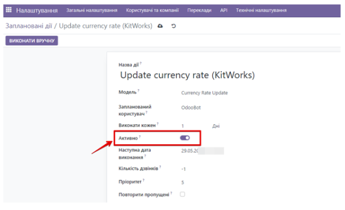